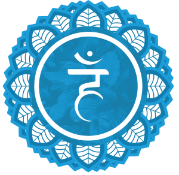
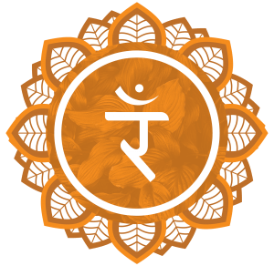

Os 7 chakras
De baixo para cima







Dicionário de Verbos
Eu
| Verbo Aouzian | Tradução | Observações |
|---|---|---|
| Ouzar | Manifestar o eu | verbo central, base espiritual |
| xazar | existir | da raiz "xar" (tempo) + “zar” |
| vaouzar | trilhar o caminho do eu | de “vaou” (caminho do eu) |
| Kaouz | Buscar / Questionar | KA (pergunta) + OUZ (eu eterno) |
| aouzar | iniciar o ciclo | “ao” (ciclo) + ação |
| zazar | encerrar, concluir | “z” (fim) + duplicado = enfático |
conhecimento e luz
| Verbo Aouzian | Tradução | Observações |
|---|---|---|
| xalzar | iluminar | de “xal” (luz) |
| valzar | revelar a verdade | de “val” (verdade) |
| kazinar | questionar | de “kazin” (o quê) |
| xarlar | observar o tempo | “xar” (tempo) + “lar” (lar/estado) |